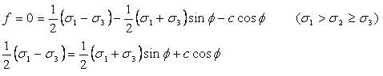
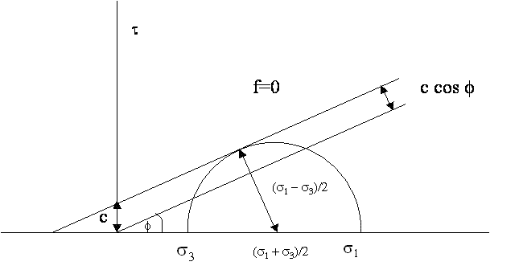
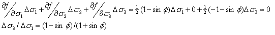
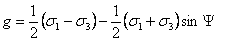
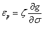
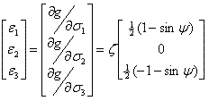
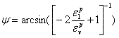

The simplest version of the Mohr-Coulomb model requires only the input of 3 parameters to describe the (occurrence and direction) of plastic deformation. The model is especially suitable for calculation of shear failure in sand-like materials, where non-linear compaction is not very relevant (i.e. can be represented via elastic parameters).
In Mohr-Coulomb plastic deformation is always assumed to occur on a shear plane or shear band, a model particularly applicable for loose or slightly coherent sand.
These shear planes may change in direction as a result of plastic strain on weak planes to allow more complex deformation systems. At this shear plane, the shear stress overcomes the (normal-stress dependent) friction and the cohesion.
The failure (plasticity) criterion is:

[Equation 1]
f = friction angle [°]
c = cohesion (MPa)

At elasticity, f<0. Stress combinations leading to f>0 are not possible, hence at plasticity not only f=0 but also S df/ds Ds=0, which determines the change in:

If plasticity occurs, the type of deformation which takes place needs to be defined. Usually the plastic strain (tensor) is dependent on the stress (tensor).
The (derivative of the) deformation function is generally not equal to the plasticity law, but similar in that the friction angle is replaced with a dilation angle y:


[Equation 2]
y = dilation angle [°]
The deformation can now be written (in main stress-strain notation):

The dilation under biaxial or triaxial conditions can be expressed as -ev/e1 = (e1+e2+e3)/e1 = - sin y/(½(1- sin y))

The intermediate stress s2 is hence of no importance to neither the failure criterion nor the deformation, which is in line with the shear plane approach.
E and n (Young’s modulus [MPa], Poisson’s ratio [-])
Elastic parameters, which determine elastic shear and bulk response. The values should be derived from triaxial loading tests.
r (density [ kg / m3] )
Bulk density for gravitational calculations.
c and f (cohesion [MPa] and friction [°])
Used to define the failure and deformation mechanisms at initial plasticity conditions.
y (dilation [°])
Used to define the relative amount of dilation during plastic deformation.
SHtot/Svtot; Shtot/Svtot, SHtot-azimuth
Initial stress field (after gravity loading). SHtot/Svtot [-] is the highest horizontal/vertical stress ratio. SHtot-azimuth [º] is the clockwise angle between the SHtot direction and the Northing. Shtot/Svtot is the lowest horizontal/vertical stress ratio [-], perpendicular to the SHtot direction.
av (Volumetric Thermal Expansion Coefficient [°C-1 or K-1]
Relative volumetric expansion per degree temperature change. The value is three times the linear expansion coefficient, sometimes provided for solids.